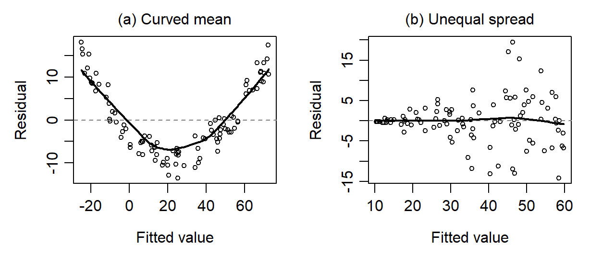
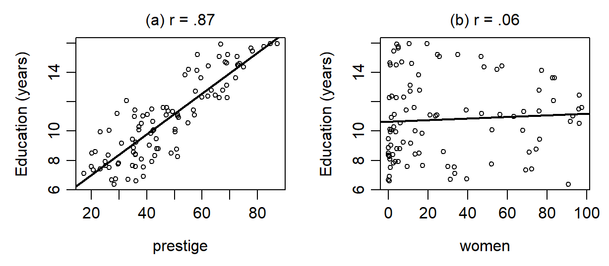
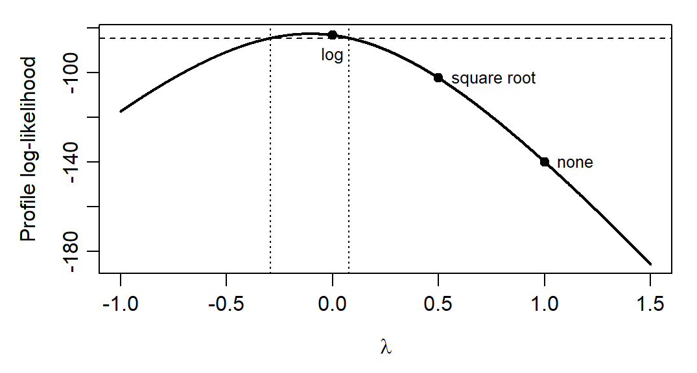

A fitted regression returns coefficients, standard errors and intervals whether or not its assumptions hold. This chapter asks how far those answers can be trusted, and what to do when they cannot. It works with one model for the occupation records, income on education, prestige and the percentage of women. It states the assumptions of linear regression, checks them with residual plots, and finds the occupations that pull the fit hardest. It then examines predictors that overlap, measures what each predictor contributes, and revises the model by transforming the outcome or letting a predictor’s slope bend. The last sections use robust standard errors and the bootstrap for unequal spread. In Project STAR, the uncertainty calculation allows dependence among pupils in the same school and treats schools as independent. By the end you will be able to read the standard diagnostic plots, judge an influential case, interpret a variance inflation factor and a standardized coefficient, choose and read a transformation, and choose an uncertainty calculation for a stated reason.
The occupation records describe Canadian occupations in 1971. Each row is an occupation, not a worker: income is the occupation’s average annual income, here in thousand dollars; education is the average years of schooling; prestige is a rating from a social survey; women is the percentage of women; and type classifies the occupation as blue-collar (bc), professional, managerial or technical (prof), or white-collar (wc). We use the 98 occupations with a recorded type, and the model
where \(x_1\) is education, \(x_2\) prestige and \(x_3\) the percentage of women. Each \(\beta_j\) is a partial slope: the difference in mean income for a one-unit difference in its predictor, with the other two predictors held fixed. In R the fitted model is m4:
(Intercept) education prestige women
0.05809166 0.16246686 0.14064530 -0.05276664
The fitted equation is \(\widehat{\mathrm{income}}_k=0.0581+0.1625x_1+0.1406x_2-0.0528x_3\), with \(R^2=.6359\) and residual SD \(s_e=2.5916\) thousand dollars on \(98-3-1=94\) degrees of freedom. The education slope has SE 0.2022 and 95% interval \([-0.2390,\ 0.5639]\). The coefficients, \(R^2\) and residual SD describe the fit to these records. The slope’s standard error and the coverage of its interval depend on assumptions about the errors. The records are the Prestige data of the carData package (Fox et al., 2022; Fox & Weisberg, 2019); the analyses are ours.
Why Model Checking Is Part of Regression Analysis
Fitting a regression model is not the end of the analysis. A fitted model returns estimates, fitted values, standard errors, intervals and \(p\)-values, but these are only as trustworthy as the model that produced them. Regression asks two things of a model: that it represents the systematic pattern in the data adequately, and that the remaining errors behave in a way that makes inference reasonable.
The point matters in social and behavioral research, where data are often noisy, unevenly spread, clustered, or influenced by a few unusual cases. Predictors can overlap strongly, and a relationship that looks linear can turn out to be curved. A model can look acceptable at first glance and still mislead.
Model checking is part of regression analysis for three reasons. It asks whether the functional form is adequate: a straight-line term may be too simple if the underlying relationship is curved. It asks whether the uncertainty statements are credible: when the error variance changes across the fitted range, when errors are dependent, or when a few cases dominate, standard errors and intervals can be wrong. It also supports interpretation. Even when the mean is curved, a partial slope still summarizes a linear comparison over these records. Interpreting it as a constant difference across the predictor range requires more, and strong predictor overlap can leave it imprecise.
Diagnostics are not a pass–fail ritual. Nearly every real dataset departs from the ideal assumptions to some extent. The aim is to judge whether the departures are minor, whether they change the substantive conclusions, and whether a more defensible model is available. Checking also leads naturally to revision. A modest change is often enough, such as a curved term, a transformed outcome, a correction of a data error, or a simpler set of predictors. Sometimes the problem is structural: clustered observations call for a model or a covariance that respects the clusters, and a binary outcome calls for a model that respects its two possible values. Model checking is therefore one of the main ways in which responsible model building takes place.
Important
A coefficient should not be interpreted merely because it was estimated. It should be interpreted after the model that produced it has been examined carefully enough to justify that interpretation.
Model Assumptions and Diagnostics
The assumptions of linear regression
Least squares gives the best estimates the model allows under a specific set of assumptions. If they are not met, the estimates may be biased or imprecise, and the \(p\)-values and intervals may be invalid. A common mnemonic for the four main assumptions is L.I.N.E.:
Linearity: the mean of the outcome is the linear predictor, \(E(y\mid x_1,\ldots,x_p)=\beta_0+\beta_1x_1+\cdots+\beta_px_p\);
Independence: the errors of different cases are independent;
Normality: the errors are Normally distributed with mean zero;
Equal variance (homoscedasticity): the errors have the same variance \(\sigma^2\) at every combination of predictor values.
The last three together are the condition \(\varepsilon_i\stackrel{iid}{\sim}\mathcal N(0,\sigma^2)\): independent and identically distributed Normal errors.
Important
Assumptions concern the errors. The assumptions are about the unobserved errors \(\varepsilon_i\), which we check through the residuals \(e_i=y_i-\widehat y_i\) of the fitted model. Neither the outcome nor the predictors need to be Normally distributed; a skewed outcome matters only through the residuals it leaves.
With several predictors, linearity asks more than whether each predictor looks roughly linear by eye. The model can be misspecified because one predictor has a curved relationship with the outcome, because an interaction has been omitted, or because a variable is on a scale that does not match the pattern in the data. These assumptions are as important in multiple regression as with one predictor, and multiple regression adds a further concern, strongly overlapping predictors, which Section 3 takes up.
What violations look like
Residual plots are easiest to read after seeing what a violation does when the truth is known. Figure 1 plots residuals against fitted values for two simulated sets of 100 cases, each fitted with a straight line. In panel (a) the true mean is curved, \(y=x^2-10+\varepsilon\), so linearity fails: the residuals are positive at low and high fitted values and negative in between, because the line underpredicts at both ends and overpredicts in the middle. In panel (b) the mean is straight, \(y=10+5x+\varepsilon\), but the error SD equals \(x\), so equal variance fails: the residuals fan out as the fitted values grow, the funnel shape called heteroscedasticity.

Figure 1: Residuals against fitted values for two simulated sets of 100 cases, each fitted with a straight line. (a) The true mean is curved, so linearity fails. (b) The error SD grows with \(x\), so equal variance fails.
Real records often show both patterns at once, and a pattern need not be perfectly flat to be acceptable. What matters is whether it is strong enough to change an answer. A U-shape or an inverted U suggests curvature; a steady bend suggests a slope that changes across the range; a cluster of large residuals at one end suggests a model that fits some parts of the range better than others.
Checking the occupation model
We check the assumptions mainly by looking at plots of the residuals. Each of the four displays in Figure 2 answers one question.
Linearity. Plot the residuals against the fitted values (panel a), the most important diagnostic plot. If the model captures the mean, the points scatter randomly around zero; a smooth curve makes a broad pattern easier to see.
Independence. No residual plot can establish it. It is judged from the design and the structure of the data: repeated measurements of the same units, or units nested in schools or families, often have correlated errors.
Normality. A Normal quantile–quantile (Q–Q) plot (panel b) sets the ordered standardized residuals, each residual divided by its own estimated SD, against the values a Normal sample of the same size would be expected to take. Points near the reference line support Normality; departures in the tails suggest skewness, heavy tails or unusually extreme cases.
Equal variance. The residuals-versus-fitted plot shows spread as well as pattern, and the scale–location plot (panel c) isolates the spread by plotting the square root of each absolute standardized residual against the fitted value. Under equal variance its band is level; a rising band is the funnel of Figure 1 (b).
Figure 2: Four diagnostic displays for the occupation model. (a) Residuals against fitted values, with a smooth curve. (b) Normal Q–Q plot of the standardized residuals. (c) Scale–location plot. (d) Standardized residuals against leverage, with point size proportional to Cook’s distance.
Read the panels against the occupation model. In panel (a) most occupations lie within 3 thousand dollars of their fitted income, but the smooth curve drifts from about 1.8 thousand dollars above zero at the lowest fitted incomes to about 1 thousand below it at the highest. The model underpredicts most of the occupations it expects to earn least: 21 of the 33 with the lowest fitted incomes lie above their fitted values. Among the 33 with the highest fitted incomes, 22 lie below, while a few lie far above; all seven occupations with the highest observed incomes are underpredicted, by 0.75 to 14.32 thousand dollars. The smoother describes the typical occupation at each fitted value, not the extremes.
Panels (a) and (c) show the spread growing with fitted income: the residual SD is 1.07 thousand dollars in the third of the occupations with the lowest fitted incomes, 0.95 in the middle third and 4.17 in the top third. By type, it is 1.05 for blue-collar, 4.32 for professional and 1.03 for white-collar occupations. This is the clearest departure, and it undermines the classical standard errors, which assume one common SD.
Panel (b) needs a careful reading. Five standardized residuals lie beyond \(\pm2\), close to the 4.46 that 98 Normal errors would produce on average, but three lie beyond \(\pm3\), where only 0.26 would be expected: general managers (5.64), physicians (4.38) and ministers (\(-3.05\)). A Q–Q plot pools all the residuals, so it cannot by itself separate two explanations: errors that are non-Normal at each fitted value, or Normal errors whose spread differs across occupations. Mixing a few residuals from a high-spread group with many from low-spread groups also produces long tails. Read the Q–Q plot together with the spread.
Independence is a working assumption: the occupations are not a random sample, and occupations in one labour market can share conditions that move their incomes together.
Table 1 collects the four checks, what each showed for the occupation model, and which of the model’s answers a violation puts at risk. Only a wrong mean function changes what the coefficients describe; the other three bear on the uncertainty statements.
Table 1: The four assumptions, how each is checked, what the occupation model shows, and which answers a violation puts at risk.
Assumption
How it is checked
Occupation model
Answers at risk
Linearity
Residuals against fitted values and each predictor
Smooth curve drifts from about 1.8 to \(-1\) thousand dollars
What the slopes mean
Independence
The design, not a plot
Not a random sample; one shared labour market
SEs, tests and intervals, too narrow when occupations move together
Normality
Normal Q–Q plot, read with the spread
Three standardized residuals beyond \(\pm3\) (0.26 expected)
Small-sample \(t\) and \(F\) references; prediction intervals
Equal variance
Scale–location plot; residual SD by group
Residual SD 1.07, 0.95 and 4.17 across thirds of fitted income
Classical SEs, tests and prediction intervals
Base R’s plot(m4) draws versions of the displays in Figure 2, and two lines give the first:
plot(fitted(m4), resid(m4))abline(h =0, lty =2)
Locating a pattern
Plotting residuals against each predictor shows where a pattern occurs (Figure 3). When two predictors rise together, the same cases can produce a pattern in both plots. Each plot suggests possibilities to examine. Least squares makes the residuals uncorrelated with each included predictor, so look for curvature, changes in spread and unusual cases.
Figure 3: Residuals of the occupation model against each predictor, with a smooth curve. The large positive residuals sit at high education and prestige and at low percentages of women.
The large positive residuals sit at high education, high prestige and low percentages of women, which describes the professional and managerial occupations. Across the thirds of prestige the residual SD is 1.07, 0.81 and 4.22 thousand dollars, and across the thirds of education 0.98, 1.08 and 4.20. Among the 24 occupations with prestige above 60, 16 lie below the fitted surface while a few, general managers, physicians, osteopaths and lawyers, lie far above it. The clearest pattern is a widening spread with a few extreme incomes at the top. As an exploration, add each predictor’s square in turn. The classical tests give \(p=.018\) for prestige squared, \(.17\) for education squared and \(.72\) for women squared. Section 5.2 examines how sensitive the prestige result is to unequal spread and to the extreme occupations.
Unusual and influential occupations
Omitting general managers changes the education slope more than omitting any other occupation, while omitting physicians changes the prestige slope but hardly the education slope. Why should two high-income occupations pull on the coefficients so differently? Three related properties describe unusual cases:
residual size: how far a case’s outcome is from its fitted value;
leverage: how unusual its combination of predictor values is;
influence: how much the fitted model changes when the case is left out.
At a given leverage, a larger absolute residual moves the fit more when the case is omitted. A sufficiently large residual can therefore matter even at average leverage. The leverage\(h_i\) of case \(i\) measures how far its predictor values lie from their joint centre. The leverages average \((p+1)/n\), here \(4/98=.0408\), and values above about twice that average, .0816, deserve a look. Cook’s distance combines leverage with the standardized residual,
and summarizes how far all the fitted values move when case \(i\) is omitted (Appendix A). Panel (d) of Figure 2 plots the standardized residuals against leverage, with larger circles for larger Cook’s distances.
The highest leverages, about .09–.10, belong to occupations such as sewing-machine operators and nurses, whose combinations of education, prestige and percentage of women are unusual but which lie close to the fitted surface. The two most influential occupations are physicians, with leverage .0678 and Cook’s distance .3482, and general managers, whose near-average leverage of .0414 accompanies a Cook’s distance of .3441. Refitting without each one shows where their influence falls:
drop_gm <-update(m4, data = dat[rownames(dat) !="general.managers", ])drop_ph <-update(m4, data = dat[rownames(dat) !="physicians", ])rbind(all =coef(m4), without_managers =coef(drop_gm),without_physicians =coef(drop_ph))[, -1]
education prestige women
all 0.1624669 0.1406453 -0.05276664
without_managers 0.2790346 0.1132569 -0.05113741
without_physicians 0.1800593 0.1218832 -0.05172214
Omitting general managers moves the education slope from 0.1625 to 0.2790, more than half its standard error, and the prestige slope from 0.1406 to 0.1133. Omitting physicians moves education only to 0.1801 but prestige to 0.1219, and omitting both gives 0.3023 and 0.0922. The women slope barely moves. Table 2 sets the three properties beside the slope changes for five notable occupations. Its column \(z_{i1}\) is the occupation’s education minus the education its prestige and percentage of women predict, in years.
Table 2: Leverage \(h_i\), standardized residual \(r_i\), Cook’s distance \(D_i\), residualized education \(z_{i1}\) in years, and the change in two slopes (slope without the case minus full-model slope, computed before rounding) for five occupations, in thousand dollars per year of education and per prestige point. The full-model slopes are 0.1625 (SE 0.2022) and 0.1406 (SE 0.0326).
Occupation
\(h_i\)
\(r_i\)
\(D_i\)
\(z_{i1}\)
Change in education slope
Change in prestige slope
Sewing-machine operators
.0983
1.0446
.0297
\(-2.5567\)
0.0444
\(-0.0047\)
Nurses
.0922
\(-0.6060\)
.0093
\(-1.7414\)
\(-0.0175\)
0.0037
General managers
.0414
5.6447
.3441
\(-1.2818\)
0.1166
\(-0.0274\)
Physicians
.0678
4.3761
.3482
\(-0.2461\)
0.0176
\(-0.0188\)
Ministers
.0383
\(-3.0488\)
.0926
0.4305
0.0211
0.0039
A positive change means the case holds the slope down: without general managers the education slope rises by 0.1166. An added-variable plot shows why (Figure 4). Its axes show what remains of income and of one predictor after adjusting both for the others. Its line has that predictor’s partial slope. A case pulls on the slope through both its horizontal distance from zero and its vertical distance from the line, the full-model residual. General managers have 1.28 fewer years of education than their prestige and percentage of women predict, together with a large positive residual, so they pull the education slope down. Physicians are just 0.25 years below their predicted education, so they barely affect its slope. Both have 10 to 12 more prestige points than their education and percentage of women predict, so both pull the prestige slope up. Sewing-machine operators move the education slope 2.5 times as far as physicians, despite a Cook’s distance one-twelfth as large, because they lie far from zero on residualized education, even with only a modest residual.
Figure 4: Added-variable plots for (a) education and (b) prestige. Each axis shows the part of a variable that the other two predictors do not predict, and the line’s slope is the partial slope. In (a) general managers sit left of centre with a large residual, pulling the education slope down, while physicians sit near the centre; in (b) both sit far to the right, pulling the prestige slope up.
Cook’s distance summarizes the change in all the fitted values. The added-variable plots show why two cases with similar Cook’s distances can move individual slopes by different amounts. The education slope’s wide interval also reflects how little information the records hold about education at fixed prestige and percentage of women.
Unusual cases arise for several reasons: errors of entry or coding, genuine but extreme values, predictors the model omits, subgroups it ignores, or a misspecified model. Influential cases are therefore not deleted mechanically. First check whether the record is valid; if it is, ask what it reveals about the process or the model, and report the analysis with and without it. Nothing suggests that general managers or physicians were recorded wrongly. Their high incomes say that the additive model fits the top of the income range poorly, which the residual plots already showed. A useful order is to ask whether the residuals show a pattern, whether their spread is stable, whether their tails are far from Normal, which cases have large residuals, leverage or influence, and whether those cases reflect data problems, genuine extremes or a misspecified model.
Multicollinearity: Redundancy between Predictors
Redundant predictors
Multicollinearity occurs when two or more predictors are highly correlated, so that one of them can be predicted well from the others. It is not a violation of the L.I.N.E. assumptions, which concern the errors; it is a property of the predictors in the data, and it complicates estimation and interpretation. High correlation between predictors means redundancy: much of the variation in one predictor is already carried by another.
Figure 5 draws each variable’s variation as a circle. With no redundancy (left), the circles for \(x_1\) and \(x_2\) do not overlap, and each predictor’s overlap with \(y\) is its own: region B for \(x_1\) and C for \(x_2\). With high redundancy (right), the predictor circles overlap heavily (regions D and G), and region D, the outcome variation shared by both predictors, cannot be attributed uniquely to either. Each predictor’s unique overlap with the outcome, B or C, is then much smaller than its total overlap. The same idea extends to redundancy among more than two predictors.
Figure 5: No redundancy and high redundancy between two predictors. Each circle stands for a variable’s variation; overlaps stand for shared variation.
Effects of multicollinearity and its detection
Multicollinearity need not harm the predictive accuracy of the predictors as a set: the occupation model’s \(R^2\) of .6359 is unaffected by how the shared variation is divided. When one predictor is largely predictable from the others, however, three things follow.
Unstable estimates. Coefficients can change markedly with small changes in the data, as the education slope did when one occupation was omitted.
Inflated standard errors. The records hold little information about one predictor at fixed values of the others, so its SE grows and its interval widens, and a predictor can look unimportant even when it matters.
Difficult interpretation. Holding the other predictors fixed becomes a comparison the records rarely show, because the related predictors move together.
The usual diagnostic is the variance inflation factor (VIF). Regress each predictor \(x_j\) on all the other predictors and call that regression’s coefficient of determination \(R^2_j\). A large \(R^2_j\) means that \(x_j\) is largely redundant; \(1-R^2_j\), its tolerance, measures how much of it is unique. The VIF is the reciprocal of the tolerance:
For the same error variance and spread of \(x_j\), the sampling variance of \(\widehat\beta_j\) is \(\mathrm{VIF}_j\) times what it would be if \(x_j\) were uncorrelated with the other predictors. The corresponding factor for the SE is \(\sqrt{\mathrm{VIF}_j}\) (Appendix A). A VIF of 1 means no redundancy. A common rule of thumb treats values above 5, or above 10 by a more lenient standard, as a serious level of multicollinearity; such cutoffs are conventions, not tests.
car::vif(m4)
education prestige women
4.461372 4.498842 1.125485
1/ (1-summary(lm(education ~ prestige + women, data = dat))$r.squared)
[1] 4.461372
Education and prestige correlate .8665. Prestige and women predict 77.59% of the variation in education, so education’s tolerance is .2241 and its VIF 4.4614. Prestige’s VIF is 4.4988, and women’s is 1.1255.
The SE formula has two factors, and adding a predictor can move them in opposite directions. A predictor that explains income lowers the residual SD \(s_e\); a predictor that overlaps with \(x_j\) raises \(\sqrt{\mathrm{VIF}_j}\). Table 3 follows education’s SE through four models for income.
Table 3: Education’s standard error in four models for income, as the product of the SE without overlap, \(s_e/\sqrt{(n-1)s_{x_j}^2}\), and \(\sqrt{\mathrm{VIF}_j}\); \(n-1=97\) and \(s_{x_j}=2.7489\) years. Residual SDs in thousand dollars, SEs in thousand dollars per year.
Other predictors
\(s_e\)
\(R^2_j\)
\(\sqrt{\mathrm{VIF}_j}\)
SE without overlap
SE
None
3.4799
0
1.0000
0.1285
0.1285
Women
2.8209
.0038
1.0019
0.1042
0.1044
Prestige
3.0221
.7508
2.0032
0.1116
0.2236
Prestige and women
2.5916
.7759
2.1122
0.0957
0.2022
Adding women lowers the SE from 0.1285 to 0.1044 through the residual SD alone, because women hardly overlaps with education. Adding prestige instead raises it to 0.2236: the residual SD falls, but the overlap doubles the SE. The full model combines both effects, so the SE of 0.2022 is 2.11 times the 0.0957 it would have without overlap. Figure 6 shows two pairwise relationships. Each VIF measures overlap with both remaining predictors.

Figure 6: Education against prestige (a) and against the percentage of women (b) in the 98 occupations. Prestige predicts education closely; the percentage of women hardly predicts it at all.
When multicollinearity is high, the options depend on the question. One of two nearly interchangeable predictors can be removed, if the question does not need both. Highly correlated predictors can be combined into a single composite, such as an average of standardized scores, when they measure one construct. Or both can be kept and their contribution reported jointly, with a block test of the two coefficients together, when the question concerns the set rather than either predictor alone. More data with a wider spread of predictor combinations is the only remedy that adds information.
Predictor Contribution and Variance Partition
Which predictor contributes most? The question cannot be answered by comparing raw partial slopes, because predictors are measured in different units. The education slope, 0.1625 thousand dollars per year, is larger than the prestige slope, 0.1406 per rating point, but a year and a rating point are different changes, so comparing them is like comparing apples and oranges.
Standardized coefficients
Standardization puts every variable on a common scale by converting it to \(z\)-scores, \(z=(x-\bar x)/s_x\). The regression of the standardized outcome on the standardized predictors,
has no intercept, because every variable has mean zero. Its coefficients, the standardized partial slopes or beta weights, say by how many SDs the outcome is predicted to differ for a one-SD difference in \(x_j\), with the other predictors held fixed. They follow from the unstandardized slopes:
With one predictor the standardized slope is the correlation between outcome and predictor. Standardizing changes the units of the slopes, not the fit: \(t\) statistics, \(p\)-values and \(R^2\) stay the same.
round(coef(lm(scale(income_k) ~scale(education) +scale(prestige) +scale(women), data = dat))[-1], 4)
The standardized slopes are 0.1056 for education, 0.5686 for prestige and \(-0.3916\) for women. A one-SD difference in prestige, 17.09 rating points, predicts a difference of 0.57 SD in income, about 2.40 thousand dollars, at fixed education and percentage of women; a one-SD difference in education, 2.75 years, predicts only 0.11 SD. On this scale prestige and the percentage of women contribute far more than education in this model. The values depend on how widely each predictor varies in these particular records, so they compare predictors within one model and one sample, not across studies, and they do not rank causal importance.
Variance partition
Neither a standardized slope nor its square is the share of outcome variance a predictor explains uniquely. With one predictor, \(r^2\) is that share; with several, overlapping predictors share part of the explained variance. The high-redundancy panel of Figure 5 also shows this variance partition. The outcome circle is the total variation, TSS, scaled to 1. Region A, outside both predictor circles, is the unexplained part, RSS; regions B, C and D together are the explained part, RegSS, so their total is \(R^2\). Region B is explained uniquely by \(x_1\), C uniquely by \(x_2\), and D by both. Region G, shared by the two predictors but outside the outcome circle, is redundancy that explains nothing.
The unique part of a predictor is the change in \(R^2\), \(\Delta R^2_j\), when it is added last: the full model’s \(R^2\) minus the \(R^2\) of the model without \(x_j\). Its total part is its \(r^2\) with the outcome in a simple regression. For education and prestige alone, \(R^2=.4996\): education uniquely explains .0050, prestige .1701, and the two share .3246, a large region D because the predictors are so redundant.
education prestige women
0.002500883 0.071876350 0.136283612
Table 4: Total and unique contributions of the three predictors to the explained variation of income, \(R^2=.6359\).
Predictor
Correlation with income
Total, \(r^2\)
Unique, \(\Delta R^2\)
Standardized slope
Education
.5741
.3296
.0025
0.1056
Prestige
.7033
.4946
.0719
0.5686
Women
\(-.4477\)
.2005
.1363
\(-0.3916\)
Table 4 sets the two kinds of contribution side by side. Education alone explains 32.96% of the variation in income, but only 0.25% uniquely once prestige and women are present: almost everything education explains, prestige explains too. The unique parts sum to only .2107 of the model’s \(R^2\) of .6359; the remaining .4253 is shared. Each unique part is the partial \(F\) test of its coefficient on another scale, \(F=\Delta R^2_j/\{(1-R^2)/(n-p-1)\}\): for education, \(.0025/(.3641/94)=0.6454\) from these rounded entries; before rounding the ratio is 0.6457, the square of education’s \(t\) (0.8036).
Neither summary measures importance by itself. A predictor that duplicates another can contribute almost nothing uniquely while still mattering substantively, and with three or more predictors the shared variation can no longer be split among them in one agreed way. The circles are a heuristic: with education and the percentage of women, for example, the “shared” part is slightly negative, \(-.0340\), because each predictor makes the other more useful, which no diagram of overlapping circles can draw.
Addressing Violations: Transformations and Model Form
When diagnostics show that assumptions fail, we can often revise the model rather than abandon it. Two common revisions are transforming the outcome, which changes its scale, and adding a curved term for a predictor, which keeps the scale and changes the mean function.
Transforming the outcome
Changing the scale of the outcome with a logarithm or a square root can stabilize the variance of the residuals. Figure 7 refits the occupation model with each transformation.
Figure 7: Residuals against fitted values after transforming income: (a) log income, (b) square-root income. Compare the spread with panel (a) of the diagnostic figure for income itself.
The log scale evens the spread most. Across the thirds of the fitted values, the residual SDs are .23, .13 and .32 on the log scale, against 1.07, 0.95 and 4.17 thousand dollars on the original scale; the square-root scale lies between, .22, .17 and .55. By type, the professional residual SD on the log scale is about twice the others, against about four times on the original scale. The transformation helps without removing the problem, and it changes the question.
A coefficient in a log-outcome model is a difference in expected log income. Exponentiating turns it into a multiplicative difference, and \(100(e^{\widehat\beta_j}-1)\) expresses it as a percentage: the percentage difference in the geometric mean of income, the exponentiated mean of log income, for a one-unit difference in \(x_j\) at fixed values of the other predictors. The geometric mean is not the arithmetic mean, so this is not automatically a statement about average income in dollars.
100* (exp(coef(m4_log)[-1]) -1)
education prestige women
1.273704 1.970545 -0.811199
One more prestige point is associated with about 1.9705% higher geometric-mean income, 95% interval \([1.3566,\ 2.5882]\) percent, and one more percentage point of women with about 0.8112% lower, interval \([-0.9743,\ -0.6479]\); education’s 1.2737%, interval \([-2.4440,\ 5.1331]\), remains unresolved. The intervals transform the endpoints of the log-scale intervals, which is legitimate because the transformation is monotone. Fit statistics do not carry across the change of scale: the log model’s \(R^2\) of .7924 and AIC of 5.4873 describe log income and cannot be compared with the income model’s .6359 and 470.6719. A changed outcome scale is a changed question, not data cleaning (Fox & Weisberg, 2019).
Choosing a transformation and interpreting the resulting coefficients correctly are key skills in applied regression. Table 5 lists common transformations of the outcome.
Why does each power suit its pattern? A transformation \(g\) multiplies the variance approximately by the square of its slope at the mean,
where \(\mu\) is the mean of \(y\) at given predictor values and \(g'(\mu)\) is the derivative, the slope of the transformation at \(\mu\). If the SD of \(y\) grows like \(\mu^k\), then \(g(y)=y^{1-k}\), or \(\log y\) when \(k=1\), has roughly constant variance. The first three rows of Table 5 are the cases \(k=1/2\), the square root, \(k=1\), the log, and \(k=2\), the reciprocal.
Table 5: Common transformations of the outcome in linear models.
Transformation
When to use
Interpretation
Example
Log, \(y'=\log y\)
The SD grows in proportion to the mean, so the variance grows with the mean squared, or the outcome is strongly right-skewed and positive
A coefficient is a difference in log outcome; \(100(e^{\beta}-1)\) is a percentage difference in the geometric mean
Annual income, whose spread is much larger among high earners
Square root, \(y'=\sqrt y\)
Counts or small whole numbers whose variance is roughly proportional to the mean; milder than the log
The model predicts the square root of the outcome, so coefficients are harder to translate back
Number of helping acts observed in a schoolyard in an hour
Reciprocal, \(y'=1/y\)
Variance grows even faster, roughly with the fourth power of the mean; strongly compresses large values and reverses the order
Coefficients are on the reciprocal scale; a rate such as speed can make it natural
Time to complete a cognitive task, read as speed
Square, \(y'=y^2\)
The outcome is left-skewed, with many values near the top of its scale
Not a remedy for unequal spread; coefficients are on the squared scale
Life-satisfaction ratings bunched near the top of a 0–10 scale
The Box–Cox transformation offers a guide to the choice (Box & Cox, 1964). It is a family of power transformations indexed by \(\lambda\),
\[
y^{(\lambda)}=\frac{y^\lambda-1}{\lambda}\quad(\lambda\neq0),
\qquad y^{(0)}=\log y,
\]
defined for a positive outcome. Familiar transformations are members of the family, up to a rescaling: \(\lambda=1\) leaves the outcome unchanged, \(\lambda=1/2\) is the square root, \(\lambda=0\) the log and \(\lambda=-1\) the reciprocal, so \(\lambda\) plays roughly the role of \(1-k\) above. The method estimates \(\lambda\) by maximum likelihood: the value under which the transformed outcome best fits a linear model with Normal, equal-variance errors. From the lowest to the highest third of fitted income, mean income rises about threefold, from 3.65 to 10.80 thousand dollars, while the residual SD rises about fourfold, from 1.07 to 4.17. The SD grows at least as fast as the mean, which points to \(\lambda\) at or below 0. The correspondence is a guide: Box–Cox maximizes the full Normal likelihood, which weighs skewness and the form of the mean as well as the spread.
bc <- MASS::boxcox(m4, lambda =seq(-1, 1.5, by = .001), plotit =FALSE)bc$x[which.max(bc$y)]
[1] -0.106

Figure 8: Box–Cox profile log-likelihood for the occupation model. Values of \(\lambda\) whose log-likelihood lies above the dashed line, within 1.92 of the maximum, form the approximate 95% interval; the log (\(\lambda=0\)) lies inside it, the square root (\(\lambda=1/2\)) and the untransformed outcome (\(\lambda=1\)) far below.
For the occupation model the estimate is \(\widehat\lambda=-0.106\), with an approximate 95% interval from \(-0.294\) to 0.077 (Figure 8). The log-likelihood at \(\lambda=0\), \(-83.35\), lies within 1.92 of its maximum, \(-82.71\), whereas the square root (\(-102.50\)) and the untransformed outcome (\(-139.98\)) lie far below. The interval contains 0, so the log transformation, which is far easier to interpret than \(\lambda=-0.106\), is consistent with the records, while the square root and the untransformed outcome are not. The usual practice is to choose a nearby interpretable value inside the interval rather than the estimate itself.
Adding a squared term
A curved relationship can also be kept on the original scale by adding a power of a predictor as one more column. A polynomial term such as \(x^2\) keeps the model linear in its coefficients, so it is still a linear regression, but the predictor’s slope now depends on its own value:
\[
E(y\mid x,\ldots)=\beta_0+\beta_1x+\beta_2x^2+\cdots,\qquad
\text{slope at }x=\beta_1+2\beta_2x,\qquad
x^{*}=-\frac{\beta_1}{2\beta_2}.
\]
The slope is zero at the turning point \(x^*\). Of the three squared terms explored in Section 2.4, prestige showed the strongest apparent curvature. On the same 98 occupations, how much does the fitted slope change over the observed prestige range, and how well do the records support that bend?
Figure 9: Component-plus-residual display for prestige in the model with a squared prestige term. The solid curve is the fitted quadratic component and the dashed line the linear component of the model without it; the labels give the curve’s slope at prestige 30, 50 and 70.
The squared coefficient is 0.0021 (classical SE 0.0009, \(t=2.4090\)). The classical partial \(F\) test gives \(F(1,93)=5.8034\), \(p=.0180\). AIC falls from 470.6719 to 466.7397 and BIC from 483.5968 to 482.2495. A component-plus-residual display (Figure 9) shows what the term claims: it plots each occupation’s fitted prestige component plus its residual against prestige, so that the curve can be judged against the records. The fitted slope is 0.0696 thousand dollars per prestige point at prestige 30, 0.1533 at 50 and 0.2369 at 70. The fitted mean rises throughout the observed range and faster at the top. The turning point, 13.3476, lies below the smallest observed prestige of 17.3, so the falling branch of the parabola lies outside the records.
The support for this bend is sensitive to two choices. The case bootstrap of Section 6.2 draws whole records from the 98 occupations, allowing for unequal error variance. Refitting the prestige-squared model in each of 2,000 resamples (seed 90909) gives a 95% percentile interval of \([-0.0005,\ 0.0043]\). The squared coefficient was at or below zero in 149 refits. Each refit keeps the term chosen in Section 2.4, so the original comparison of three terms remains exploratory. Omitting general managers and physicians reduces the squared coefficient to 0.0004 (classical \(p=.54\)); most of the drop comes from physicians alone, since omitting only physicians gives 0.0007 and omitting only general managers 0.0019. The first check changes the uncertainty, the second the fitted curve. Both qualify the exploratory evidence for a steeper income–prestige relationship at high prestige. Adding the square also moves the education coefficient from 0.1625 to 0.0659.
The linear coefficient of prestige, \(-0.0558\), is the slope at prestige zero, a value no occupation has, so it is not a “negative prestige effect”. Centering prestige at its mean, 47.3276, before squaring moves that reading to the middle of the records. Table 6 sets the two fits side by side.
Table 6: The squared-prestige model with prestige as recorded and centered at its mean: the same fit, read at a different prestige value.
Prestige as recorded
Prestige centered at 47.3276
Linear prestige coefficient (SE)
\(-0.0558\) (0.0875)
0.1421 (0.0319)
What the linear coefficient is
Slope at prestige 0
Slope at mean prestige
Squared prestige coefficient (SE)
0.0021 (0.0009)
0.0021 (0.0009)
Education coefficient (SE)
0.0659 (0.2012)
0.0659 (0.2012)
Correlation of prestige with its square
.9849
.3216
Residual SD; \(R^2\)
2.5278; .6573
2.5278; .6573
Only the linear coefficient and the correlation between prestige and its square differ. Centering changes no fitted value: the curve, the squared coefficient, the other coefficients and the fit are the same. It changes where the linear coefficient is read, from an empty region at prestige zero to the middle of the records, which is why its SE is about 2.7 times smaller: the records say much more about the slope at prestige 47 than at prestige 0. The squared term does not repair the unequal spread, whose residual SDs across the thirds of the fitted values remain 1.07, 0.99 and 4.06.
Robust Standard Errors and the Bootstrap
The revisions of Section 5 changed the mean part of the model or its scale. This section keeps the income model as it is and changes only the uncertainty calculation, because the classical standard errors assumed one common error variance and Figure 2 showed that the spread is far from common.
Unequal spread and HC3 standard errors
Figure 10 shows the residuals of the occupation model by type.
Figure 10: Residuals of the occupation model by type, with each type’s residual SD.
The residuals of professional occupations spread about four times as widely as the others: SD 4.3214 thousand dollars against 1.0516 for blue-collar and 1.0316 for white-collar occupations. A single residual variance averages these spreads, so it overstates the uncertainty that some rows contribute and understates it for others.
A heteroscedasticity-consistent covariance, of which HC3 is the usual choice, drops the common-variance assumption. It replaces the single residual variance by each row’s own squared residual, divided by \((1-h_i)^2\) to allow for the smaller residuals that high-leverage rows tend to leave, and combines these row contributions with the same predictor information used in the fit (Long & Ervin, 2000; MacKinnon & White, 1985; White, 1980; Zeileis, 2004). Appendix A derives the estimator. The fitted coefficients do not change; only their standard errors do. Side by side, the two covariances are
where the design matrix \(\mathbf X\) has a column of ones and one column per predictor, and \(\mathbf x_i=(1,x_{i1},\ldots,x_{ip})^{\mathsf T}\) is its row \(i\).
V_hc3 <- sandwich::vcovHC(m4, type ="HC3")cbind(classical =sqrt(diag(vcov(m4))), HC3 =sqrt(diag(V_hc3)))
Will every SE grow? Not here. The prestige SE rises by about 20%, from 0.0326 to 0.0393, but the education SE falls, from 0.2022 to 0.1719, and the women SE falls from 0.0089 to 0.0066. The robust 95% interval for education is \([-0.1788,\ 0.5038]\): narrower, with the same reading of an unresolved comparison. For one slope, the comparison reduces to a ratio that shows why,
where \(z_{ij}\) is case \(i\)’s residual from regressing \(x_j\) on the other predictors, the horizontal axis of the added-variable plot (Figure 4). HC3 thus replaces \(s_e^2=6.72\) (thousand dollars squared) by a weighted average of leverage-adjusted squared residuals, weighted toward the cases that carry information about \(x_j\): 4.85 for education, 9.74 for prestige and 3.69 for women. Physicians lie near zero on residualized education (weight .0004, against an average of \(1/98=.0102\)), and general managers carry about the average weight (.0100). On residualized prestige both carry more than the average weight, .0212 for general managers and .0161 for physicians, and there their large residuals supply about 71% of the weighted average, against 47% for education. The direction of each change thus depends on where the large residuals sit on each residualized predictor, so wide spread in one group does not by itself say which SEs will rise. HC3 changes the covariance, so it can raise or lower an SE, while every coefficient, fitted value and residual stays exactly what it was. A report names the covariance estimator and the reason for it before seeing which gives the preferred conclusion; switching after seeing the results turns a method into a selection.
Case resampling: the bootstrap
The bootstrap approximates uncertainty differently: refit the model to many resamples of the records, drawn with replacement, and read the spread of the refitted estimates directly (Davison & Hinkley, 1997; Efron, 1979; Efron & Tibshirani, 1993). What to resample is an assumption. Here we choose case resampling, drawing whole occupation records, because the predictors were not set by a design and because their residual spread differs by type, which resampling whole rows preserves without assuming one common error distribution (Freedman, 1981). Appendix B compares two schemes that hold the predictors fixed and resample the errors.
One repetition draws 98 rows with replacement and refits the model:
set.seed(90909)rows <-sample.int(nrow(dat), replace =TRUE)coef(update(m4, data = dat[rows, ]))
Repeat this \(B=2000\) times and collect the coefficients. Their SDs estimate the coefficients’ standard errors, and their 2.5th and 97.5th percentiles give percentile intervals. The seed 90909 and the count belong in the record, because another set of resamples gives slightly different summaries.
Figure 11: The 2,000 case-resampled education slopes (seed 90909). Solid lines mark the percentile interval; the dashed curve is the Normal distribution with the classical SE 0.2022.
Table 7: Classical, HC3 and case-bootstrap uncertainty for the occupation model (seed 90909, \(B=2000\)).
Coefficient
Estimate
Classical SE
HC3 SE
Bootstrap SE
Percentile 2.5%
Percentile 97.5%
Education
0.1625
0.2022
0.1719
0.1695
\(-0.2001\)
0.4531
Prestige
0.1406
0.0326
0.0393
0.0375
0.0720
0.2184
Women
\(-0.0528\)
0.0089
0.0066
0.0061
\(-0.0653\)
\(-0.0410\)
Figure 11 and Table 7 show the resampling results. The bootstrap SEs sit close to HC3 for every coefficient, and both differ from the classical SEs in the same directions: smaller for education and women, larger for prestige. Agreement between HC3 and the bootstrap is not independent confirmation, because both rely on the same 98 records and both drop the common-variance assumption. The percentile interval for education, \([-0.2001,\ 0.4531]\), still covers zero.
The normal-approximation interval uses the resampling distribution only for its spread: the estimate plus and minus 1.96 bootstrap SEs, for education \([-0.1698,\ 0.4947]\). It is close to the percentile interval when the resampling distribution is roughly Normal and centered near the estimate. The skewness of the resampled slopes, a measure of asymmetry whose sign shows the longer tail, is \(-0.4038\) for education, 0.3471 for prestige and \(-0.1882\) for women: mild asymmetry, so the two kinds of interval agree closely. For strongly skewed resampling distributions, the higher-order intervals of Appendix B are preferred.
What robust and resampled uncertainty cannot repair
HC3 and the case bootstrap have one job: under a correctly specified mean and independent cases, they estimate uncertainty without assuming a common error variance. Several problems lie outside that job.
A wrong mean function. If the mean function is wrong, the coefficients estimate a different quantity (Appendix A names it), and a robust SE describes that quantity’s variability without making it the quantity of interest.
Dependence. Rows that are not independent break both methods’ derivations. Section 7 shows a robust row-level SE and a naive one agreeing closely while both understate the uncertainty by nearly half.
Selection and causal identification. Which records enter, and whether a comparison is causal, depend on the design, not on the covariance estimator.
Measurement error. Error in a predictor biases its slope, toward zero with one predictor and in either direction with several, and no covariance estimator repairs it (Cohen et al., 2003).
Thin support. A coefficient comparing occupations at combinations of predictor values the records rarely contain stays poorly informed, however its SE is computed.
Resampling also treats the occupations as independent and exchangeable, and there are reasons to doubt both: they share one historical labour market, they were selected for complete records rather than sampled at random, and their values are averages over workers. When a design has clusters, the resampling unit and the covariance must follow the design, which is where the next section begins.
Clustered Data: Project STAR
The occupation records were observational. Project STAR is a large experiment: kindergarten pupils were randomized to class types within their schools. The randomization supports reading the class-type comparison as an assignment comparison, and the schools make pupils’ outcomes dependent, which the uncertainty calculation has to follow.
The study and its question
The question is specific:
Among eligible kindergarten pupils in the participating Tennessee schools, what was the mean reading-score difference under assignment to a small rather than a regular class?
The outcome is readk, an end-of-kindergarten reading scale score, and the field stark records the kindergarten class-type condition. Reading the small-versus-regular comparison as an assignment comparison rests on the documented protocol, not on the column name or the lm() call: random assignment occurred within participating schools (Finn & Achilles, 1990; Mosteller, 1995). The regular-with-aide arm lies outside this two-arm comparison and is excluded by design.
Three limits come with the question. Class type is not a measured headcount, so the analysis estimates no dose response in pupils per room. The distributed field does not verify each pupil’s original assignment; an assignment-effect reading also requires linking the recorded type to the assignment record and checking switches, which this teaching reanalysis does not do. And the target is the pupil-weighted mean assignment effect for the eligible cohort, which a common coefficient from a complete-record model reaches only through a further link: a common effect across schools or an explicit weighting argument.
The data are distributed as AER::STAR, accompanying Applied Econometrics with R and following the version used by Stock and Watson (Kleiber & Zeileis, 2008; Stock & Watson, 2007). They are loaded from the package, and the analysis is retrospective rather than preregistered.
Which records enter the analysis
A record can be absent from an analysis for two different reasons, and they are kept apart. Pupils who entered the study after kindergarten have no kindergarten condition: their absence is structural ineligibility. Eligible kindergarten pupils whose reading score or covariates were not recorded are missing, and missingness can distort a comparison. Only the variables a calculation uses enter its complete-record rule, so a missing mathematics score (mathk) does not exclude a usable reading record.
Table 8: STAR eligibility and reading-analysis completeness.
Stage
\(n\)
Distributed records
11,598
Kindergarten condition recorded
6,325
Eligible small or regular
4,094
Eligible, reading observed
3,745
Complete primary records
3,735
Primary regular
2,001
Primary small
1,734
Primary schools
79
The 5,273 records without a kindergarten condition are later entrants, not failed measurements, so they belong in no count of missing values. Among the 4,094 eligible two-arm records, 349 lack a reading score. Ten more of the 3,745 observed-reading records lack a covariate, leaving 3,735 primary records in 79 schools, held in star_df in the code. Complete-record inference assumes that, given the declared covariates and within arm and school, whether a score was recorded does not depend on the score itself. Similar missing percentages across arms do not establish that condition. The 3,745 observed-reading records remain a declared sensitivity analysis.
The arm difference, unadjusted and adjusted
A regression on one 0/1 indicator reproduces the difference between the two group means. With \(x_i=1\) for the small arm and 0 for regular,
On the 3,745 observed-reading records the slope reproduces the arm difference of 5.8151 reading points exactly. The identity is algebraic; randomization adds the reason to read the difference as an assignment comparison.
Two cautions attach to the number. Treating the rows as independent with a common variance, the slope’s \(t\) test equals the pooled two-sample test, here \(t=5.6039\), which ignores that pupils sit in schools (Section 7.4). And raw arm means weight each school by its own arm-specific pupil count, so the pooled difference equals the pupil-weighted cohort target only under common assignment probabilities and comparable observation patterns, or after explicit standardization to target school weights.
The adjusted model adds free-lunch status, gender, ethnicity, teacher experience, and school indicators. The school indicators match the blocks within which assignment happened; the other covariates are the declared adjustment set, not a substitute for randomization.
star_unadjusted <-lm(readk ~ stark, data = star_df)star_primary <-lm(readk ~ stark + lunchk + gender + ethnicity + experiencek + schoolidk, data = star_df)
On the common 3,735 primary rows, the unadjusted difference is 5.8955 and the adjusted coefficient is 6.6575. Adjustment can improve precision when the added variables predict reading. It is not needed to remove baseline confounding that a well-implemented randomization already prevents: random assignment balances baseline characteristics in expectation, and covariates that predict reading only sharpen the comparison. Adjustment also does not automatically preserve the causal target: when the covariates were recorded, which rows enter, and what the fitted comparison compares still need scrutiny.
Model comparisons belong on identical rows. The earlier 5.8151 comes from 3,745 rows, so it is not the same-row baseline for 6.6575; comparing the two would mix a change of records with a change of model. The same-row pair is 5.8955 against 6.6575. Similar unadjusted and adjusted coefficients are consistent with successful randomization; they do not show that implementation, missingness, or weighting problems are absent.
Clustered standard errors
Pupils are the outcome units. Schools are the randomization blocks and the approximately independent units for the uncertainty calculation; the schools themselves were not assigned to arms. When pupils are compared within schools, the uncertainty of the overall comparison follows the school-level comparisons, and Figure 12 shows those comparisons for STAR.
Figure 12: Small-minus-regular mean reading difference in each of the 78 schools that observed both class types, ordered by size. The dashed line is their unweighted mean, 6.7094.
In the 78 schools that observed pupils in both arms, the small-class advantage ranges from about \(-32\) to 59 reading points, and it is negative in 25 schools. Pupils in one school share whatever made their school’s difference large or small: its teachers, its intake, its classrooms. The 3,745 pupils therefore do not supply 3,745 independent pieces of information about the arm difference; the schools do. An average of 78 independent differences with SD 15.4192 has SE \(15.4192/\sqrt{78}=1.7459\), close to the clustered standard errors below and far from the row-level 1.0377.
A cluster-robust covariance builds this into the robust covariance of Section 6.1: the design component stays outside, and only the middle changes. Here \(\mathbf X\) is the design matrix, with one row per pupil and one column for each of the \(p+1\) coefficients; \(\mathbf X_g\) and \(\mathbf e_g\) hold school \(g\)’s rows and residuals. The score \(\mathbf s_g=\mathbf X_g^{\mathsf T}\mathbf e_g\) sums the residual contributions within the school before an outer product is taken, and the CR1/HC1 covariance is
The within-school sums are what distinguish this from treating every pupil as independent, and \(c_G\) is a finite-cluster correction. With \(G=79\) schools, intervals use a \(t_{78}\) critical value, 1.9908 (Zeileis et al., 2020).
Table 9: Class-type comparisons with row-level, HC3, and school-clustered standard errors; intervals use the clustered SE with \(t_{78}\).
Model
\(n\)
Estimate
Row-level SE
HC3 SE
Clustered SE
Clustered interval
Observed: unadjusted
3,745
5.8151
1.0377
1.0416
1.8476
[2.1368, 9.4935]
Primary: unadjusted
3,735
5.8955
1.0399
1.0439
1.8491
[2.2143, 9.5767]
Primary: adjusted
3,735
6.6575
0.9161
0.9509
1.6974
[3.2782, 10.0368]
Observed: school-adjusted
3,745
6.6273
0.9504
0.9860
1.7797
[3.0842, 10.1703]
Table 9 holds four distinct calculations, each with its own records and specification. Each clustered interval uses the school identifiers from that model’s own rows. For the observed-reading comparison, the row-level SE is 1.0377 and HC3 gives 1.0416, while school clustering gives 1.8476, nearly twice as large. Every row shows the same pattern. Unequal spread across pupils was not the main issue; dependence within schools was. Appendix A explains how the within-school contributions enter the covariance.
These are cluster-asymptotic approximations, which improve as the number of schools grows; they are not exact randomization inference or a multilevel model. The design, not a residual plot, chooses the independence unit. And 79 clusters do not by themselves certify the approximation: the balance of information across schools and the influence of particular schools also matter.
Reporting the result and its limits
A chapter-authored report can now state:
On 3,735 complete two-arm kindergarten records, the common adjusted small-versus-regular class-type coefficient was 6.6575 reading points, with approximate school-clustered interval [3.2782, 10.0368]. Its causal mean-effect interpretation relies on documented within-school randomization, a verified link from recorded class type to original assignment, suitable complete-record selection, independent-school uncertainty, and a common-effect or target-matching weighting argument. It concerns assigned class type, one kindergarten reading outcome, and participating Tennessee schools, not realized headcount or a portable policy dose response.
The report connects statistical functions (the sample and model, the design and covariance reasoning, the estimate with its interval, and the bounded answer) with substantive ones (the pupils, test and schools, assignment and its qualifications, and the substantive claim).
Judging the report separates what is stated from what is demonstrated. The randomization protocol is documented in the study’s own publications; the selection and weighting conditions and the link from recorded class type to original assignment are stated here, not shown. Where a necessary link cannot be assessed, the report names the limitation rather than assuming it away or quietly changing the target. The design literature discusses implementation and interpretation issues that one coefficient cannot settle (Chetty et al., 2011; Hanushek, 1999; Krueger, 1999; Nye et al., 2000), and the result does not transport by itself to other schools, periods, outcomes, or education systems. Those limits belong inside the answer; a crossed significance boundary is not what makes a result (Gelman et al., 2020; Gelman & Stern, 2006). Chapter 14 returns to dependence as a design fact, reuses this calculation as its example, and asks what a design supplies that adjustment cannot.
Reading Bridge
A fitted regression is a provisional answer. Residuals against fitted values can reveal curvature in the mean, a Q–Q plot departures from Normality in the tails, and a scale–location plot changes in spread. Independence calls for reasoning about the design. Residuals against each predictor suggest where to look. For the occupation model the spread grew with fitted income, three standardized residuals lay beyond \(\pm3\), and the problem sat in a few high-prestige, high-income occupations; omitting general managers alone moved the education slope by more than half its standard error. Leverage, residual size and influence are different properties, and an influential case calls for checking and a sensitivity report, not deletion. At a fixed error variance and predictor spread, overlap multiplies a slope’s SE by the square root of its VIF. Education explained 33% of income variation alone but 0.25% uniquely once prestige and women were present. Standardized slopes compare predictors within one model, and the variance partition separates unique from shared contributions. A log outcome evened the spread and changed the question to percentage differences in geometric means, with Box–Cox supporting the log. In the exploratory prestige model, the case-bootstrap interval for the squared coefficient included zero, and omitting two occupations reduced its estimate from 0.0021 to 0.0004. HC3, the case bootstrap and a clustered covariance each change uncertainty for a stated reason and leave the coefficients alone; none repairs a wrong mean, missing outcomes, or the absence of a design. In Project STAR, schools rather than pupils were the approximately independent units, and the standard error nearly doubled.
The occupation models in this chapter are additive. Even with prestige squared, the fitted prestige slope at a given prestige value is the same at every education level. Chapter 10 asks whether the education slope itself varies with prestige and shows how to interpret that interaction.
Key terms
Use this short reference to revisit the concepts introduced here. The Part One Concept Reference gives the broader reference and the principal home of each concept.
Table 10: Selected concepts for checking and revising a regression model.
Term and common alternatives
Meaning
Model checking (regression diagnostics)
Examining whether a fitted model’s mean function and error assumptions are adequate for the answers drawn from it, mainly through residual plots and the design. It judges whether departures are minor, whether they change conclusions, and whether a better model is available; it is not a pass–fail ritual.
Regression assumptions (L.I.N.E.)
Linearity of the conditional mean, independence of the errors, Normal errors, and equal error variance at every combination of predictor values. They concern the unobserved errors, not the raw outcome or predictors, and are checked through residual plots and the design.
A residual divided by its estimated SD, \(e_i/(s_e\sqrt{1-h_i})\), roughly standard Normal under the model. A Q–Q plot compares the ordered standardized residuals with Normal quantiles; a scale–location plot shows whether their spread changes with the fitted value. A pooled Q–Q plot cannot separate non-Normal errors from spread that differs across cases.
Leverage and influence (Cook’s distance)
Leverage measures how unusual a case’s combination of predictor values is. The leverages average \((p+1)/n\). Cook’s distance measures the overall change in fitted values when a case is omitted. Its influence on a particular slope also depends on where the case lies on that predictor after adjustment for the others. Check influential cases and report how the fit changes when they are omitted.
Heteroscedasticity-consistent covariance (HC3; robust standard error)
A coefficient covariance that allows a different error variance for each case, using each squared residual adjusted for leverage. It can raise or lower a standard error and leaves the coefficients unchanged; it does not repair a wrong mean, dependence, or measurement error.
Multicollinearity (redundancy among predictors)
Strong linear association among predictors, so that one can be predicted well from the others. It leaves the joint fit intact but makes individual coefficients unstable, inflates their standard errors, and makes holding the other predictors fixed a comparison the records rarely show.
Variance inflation factor (VIF; tolerance)
\(\mathrm{VIF}_j=1/(1-R^2_j)\), where \(R^2_j\) comes from regressing \(x_j\) on the other predictors and \(1-R^2_j\) is the tolerance. Holding error variance and predictor spread fixed, the VIF multiplies the slope variance relative to uncorrelated predictors. Cutoffs such as 5 or 10 are conventions.
Standardized coefficient (beta weight)
A partial slope expressed in outcome SDs per predictor SD, \(\beta^*_j=\widehat\beta_j\,s_{x_j}/s_y\), with the other predictors held fixed. It compares predictors within one model and sample; it is not a causal ranking.
Variance partition (unique and shared contributions; change in \(R^2\))
Dividing a model’s \(R^2\) into parts explained uniquely by each predictor, the change in \(R^2\) when it is added last, and a part shared among predictors. A predictor’s total part is its squared correlation with the outcome; unique parts can be small for redundant predictors.
Refitting the model to a function of the outcome to stabilize its spread or reduce skew. The Box–Cox family \(y^{(\lambda)}\) includes the log (\(\lambda=0\)) and square root (\(\lambda=1/2\)) and chooses \(\lambda\) by likelihood. A changed scale is a changed question, and fit statistics do not carry across it.
Log-transformed outcome (geometric-mean scale)
Fitting the logarithm of the outcome, so that a coefficient is an additive difference in expected log outcome and \(100(e^{\beta}-1)\) percent is a multiplicative difference in geometric means.
Polynomial term (quadratic term; curvature)
A power of a predictor added as a further column so that the fitted mean can curve while the model stays linear in its coefficients. The predictor’s slope then depends on its value; centering before squaring moves the linear coefficient’s reading to the centre without changing the fit.
Bootstrap (case resampling; percentile interval)
Refitting the model to many resamples of the records drawn with replacement and using the spread of the refitted estimates as an SE, or their middle 95% as a percentile interval. It treats the resampled units as independent and exchangeable; it does not repair dependence, thin support, measurement error, or an observational design.
Cluster-robust standard error (school-clustered covariance)
A coefficient covariance that sums residual contributions within clusters, such as schools, before combining them, allowing dependence within clusters under an approximation that treats clusters as independent. It changes uncertainty, not the coefficient, and does not repair missing outcomes or weighting.
Further reading
Fox and Weisberg (Fox & Weisberg, 2019) show the diagnostic plots, variance inflation factors and Box–Cox transformations of this chapter in R, with the occupation records among their examples.
Fox (Fox, 2016) and Kutner and colleagues (Kutner et al., 2005) develop the linear-model algebra, the restriction statistic and the influence measures in this chapter’s Appendix A.
Efron and Tibshirani (Efron & Tibshirani, 1993) and Davison and Hinkley (Davison & Hinkley, 1997) are the standard bootstrap references, including the bootstrap-\(t\) and BCa intervals named in Appendix B.
Use the supplied numbers; rounding within 0.02 is acceptable unless a different precision is requested. These prompts do not require the appendices.
Exercise 1: Read the diagnostic plots (Foundational)
For the occupation model of income on education, prestige and the percentage of women: (a) the smooth curve of residuals against fitted values drifts from about 1.8 thousand dollars at the lowest fitted incomes to about \(-1\) at the highest; (b) the residual SD is 1.07, 0.95 and 4.17 thousand dollars in the lower, middle and upper thirds of the fitted values; (c) five of the 98 standardized residuals lie beyond \(\pm2\) and three beyond \(\pm3\), the largest 5.64 and 4.38, where 98 Normal errors would give about 4.46 and 0.26. (1) Name the assumption each finding bears on and the display that reveals it, and explain why the Q–Q plot alone cannot settle finding (c). (2) Which of the model’s answers does each finding put in question: the fitted equation, the standard errors, or a prediction interval for one new occupation? (3) Why can no residual plot establish that the occupations’ errors are independent?
Exercise 2: An influential occupation (Foundational)
Physicians have leverage .0678, standardized residual 4.38 and Cook’s distance .3482; sewing-machine operators have the highest leverage, .0983, with standardized residual 1.05. The leverages average \(4/98=.0408\). (1) Explain why the occupation with the highest leverage is not the most influential. (2) Omitting general managers moves the education slope from 0.1625 to 0.2790 and the prestige slope from 0.1406 to 0.1133; omitting physicians moves them to 0.1801 and 0.1219. What does this say about influence on particular coefficients, and about how much the records can tell us about education at fixed prestige and percentage of women? (3) A colleague proposes deleting both occupations as outliers. Give two questions to ask first, and say what to report.
Exercise 3: Variance inflation (Foundational)
Regressing education on prestige and the percentage of women gives \(R^2=.7759\). (1) Calculate education’s tolerance and VIF. (2) By what factor does the overlap multiply education’s SE, compared with an education uncorrelated with the other predictors? (3) Education’s SE is 0.1044 in the model with women only and 0.2022 once prestige is added, while the model’s \(R^2\) rises. Explain both changes. (4) Name two responses to high multicollinearity and the kind of research question each suits.
Exercise 4: Unique and total contributions (Foundational)
In the occupation model (\(R^2=.6359\), 94 residual df), education’s squared correlation with income is .3296 and its change in \(R^2\) when added last is .0025; for prestige the two values are .4946 and .0719, and for the percentage of women .2005 and .1363. The standardized slopes are 0.1056, 0.5686 and \(-0.3916\). (1) Explain the difference between a total and a unique contribution, using education. (2) The unique parts sum to .2107. What does the remaining .4253 of \(R^2\) represent? (3) Show that education’s unique part corresponds to a partial \(F\) of about 0.65 on 1 and 94 df. (4) Interpret prestige’s standardized slope, and give one reason it does not make prestige the most important cause of income.
Exercise 5: Percent, curvature and Box–Cox (Integrative)
Three revisions of the occupation model raise different questions. (1) In the log-income model the prestige coefficient is 0.0195. Give the percentage difference in geometric-mean income per prestige point, and say what “geometric mean” adds to the reading. (2) Box–Cox gives \(\widehat\lambda=-0.106\) with an approximate 95% interval from \(-0.294\) to 0.077. Which of the log, square-root and untransformed outcomes are consistent with the records, and why might a report use the log rather than \(\lambda=-0.106\)? (3) In an income model with a squared prestige term, the fitted slope is 0.0696 thousand dollars per prestige point at prestige 30, 0.1533 at 50 and 0.2369 at 70, and the turning point is at prestige 13.3476; prestige ranges from 17.3 to 87.2. Explain why this model has no single prestige slope and what the turning point’s position tells you. (4) Without general managers and physicians the squared coefficient is 0.0004 with \(p=.54\). What does this add to your reading of the curve? (5) The log model’s AIC is 5.4873 and the income model’s 470.6719. Why can the two not be compared?
Exercise 6: Choose the uncertainty calculation (Integrative)
The occupation model gives the following standard errors; its coefficients and fitted values are held fixed.
Coefficient
Classical SE
HC3 SE
Education
0.2022
0.1719
Prestige
0.0326
0.0393
Part (1) uses this table. (1) A student predicts that allowing unequal spread must make every SE larger. Use the supplied output to assess that prediction, and explain what changes when the covariance estimator changes.
In Project STAR, the small-minus-regular reading difference on 3,745 observed records is 5.8151 points. The SE is 1.0377 treating pupils as independent, 1.0416 with HC3, and 1.8476 clustering within 79 schools. The corresponding independent-row and clustered 95% intervals are [3.7807, 7.8496] and [2.1368, 9.4935]. Pupils and teachers were assigned to class types within schools. (2) Explain which uncertainty calculation respects this design, why row-level HC3 barely changes the SE here, and what remains unchanged when the clustered calculation replaces it. (3) Name two problems that none of these covariance changes repairs.
Exercise 7: Respond to a reviewer (Integrative)
A reviewer of a report on the occupation model writes: “The residuals are not Normal and their spread grows with income, so the model is invalid. Delete the two largest outliers and report the education slope with its classical interval.” Using this chapter’s results, (1) say which of the model’s answers the diagnostics do and do not undermine; (2) explain why deleting the two occupations is not a repair, and what to report instead; (3) propose two responses to the unequal spread, one that changes the model and one that changes only the uncertainty calculation, and say what each changes in the question or the answer.
Appendix A: Matrix Geometry, Influence, Restrictions, and Sandwich Constructions
This appendix derives the results that Sections 2.5, 3.2, 6.1 and 7.4 used, and names the target least squares estimates when a linear mean is only an approximation. The exercises do not require it.
Projection and the normal equations
The outcome vector \(\mathbf y\) stacks the \(n\) observed outcomes in one column. The \(n\times(p+1)\)design matrix\(\mathbf X\) stacks the corresponding predictor rows: one row per record and one column per coefficient, including a column of ones for the intercept. The vector \(\boldsymbol\beta\) contains the \(p+1\) coefficients. For m4, these are 98 outcomes, a \(98\times4\) design matrix, and four coefficients.
Assume \(\mathbf X\) has full column rank: none of its columns can be formed from the others, so \(\mathbf X^{\mathsf T}\mathbf X\) is invertible. The least-squares criterion is \(S(\boldsymbol\beta)=(\mathbf y-\mathbf X\boldsymbol\beta)^{\mathsf T}(\mathbf y-\mathbf X\boldsymbol\beta)\). Expanding gives \(S=\mathbf y^{\mathsf T}\mathbf y-2\boldsymbol\beta^{\mathsf T}\mathbf X^{\mathsf T}\mathbf y
+\boldsymbol\beta^{\mathsf T}\mathbf X^{\mathsf T}\mathbf X\boldsymbol\beta\), and differentiating with respect to \(\boldsymbol\beta\) yields the normal equations
Solving gives the estimator and its fitted and residual vectors:
\[
\widehat{\boldsymbol\beta}
=(\mathbf X^{\mathsf T}\mathbf X)^{-1}\mathbf X^{\mathsf T}\mathbf y,
\qquad
\widehat{\mathbf y}=\mathbf H\mathbf y,
\qquad
\mathbf e=(\mathbf I-\mathbf H)\mathbf y,
\]
where \(\mathbf H=\mathbf X(\mathbf X^{\mathsf T}\mathbf X)^{-1}\mathbf X^{\mathsf T}\) is the hat matrix and \(\mathbf I\) is the \(n\times n\) identity matrix. The second normal equation is the geometry: \(\mathbf e\) is orthogonal to every column of \(\mathbf X\), and therefore to their fitted linear combination \(\widehat{\mathbf y}\). The matrix \(\mathbf H\) is symmetric (\(\mathbf H^{\mathsf T}=\mathbf H\)) and idempotent (\(\mathbf H^2=\mathbf H\)): projecting an outcome onto the space spanned by the predictor columns, then projecting again, gives the same fit. Its trace is \(p+1\), which is why the leverages \(h_{ii}\) (written \(h_i\) in the text) sum to the number of fitted coefficients; for m4 they sum to 4.
With an intercept, \(\mathbf e\) is also orthogonal to the constant vector, so the centered fitted values and residuals are orthogonal. Writing \(y_i-\bar y=(\widehat y_i-\bar y)+e_i\), the cross-product term vanishes when the squares are summed:
Any full-rank recoding \(\mathbf X\mathbf A\), with \(\mathbf A\) invertible, spans the same column space, so \(\mathbf H\) and \(\widehat{\mathbf y}\) are unchanged: centering a predictor, as Section 5.2 did, cannot alter a single fitted value. Under the classical error model, \(\widehat{\mathbf V}=s_e^2(\mathbf X^{\mathsf T}\mathbf X)^{-1}\) with \(s_e^2=RSS/(n-p-1)\), which is where every classical standard error in this chapter came from. The equation explains the estimator, not its implementation: lm() uses a QR decomposition rather than forming the inverse, a more stable numerical route (Fox, 2016; Fox & Weisberg, 2019).
Leverage, Cook’s distance and the variance inflation factor
The leverage of case \(i\) is the diagonal entry \(h_{ii}\) of \(\mathbf H\): the weight of \(y_i\) in its own fitted value \(\widehat y_i=\sum_jh_{ij}y_j\). Leverages lie between 0 and 1 and sum to \(p+1\), so they average \((p+1)/n\). Under the classical model \(\operatorname{Var}(e_i)=\sigma^2(1-h_{ii})\), so a case with high leverage pulls the fitted surface towards itself and leaves a smaller residual. Dividing by the estimated SD gives the standardized residual \(r_i=e_i/(s_e\sqrt{1-h_{ii}})\) of Section 2.3.
Cook’s distance measures how far all the fitted values move when case \(i\) is omitted, scaled by the number of coefficients and the residual variance. With \(\widehat{\mathbf y}_{(i)}\) the fitted values from the fit without case \(i\),
so both the squared standardized residual and leverage contribute (Cook, 1977). Physicians’ \(r_i=4.3761\) and \(h_{ii}=.0678\) give \(D_i=(4.3761^2/4)(.0678/.9322)=.3482\).
To examine a particular slope, let \(z_{ij}\) be case \(i\)’s residual from regressing \(x_j\) on the other predictors and the intercept. Omitting case \(i\) changes the slope by \(-z_{ij}e_i/\{(1-h_{ii})\sum_k z_{kj}^2\}\). A large residual \(e_i\) can matter even at a modest distance \(z_{ij}\) from the centre of the added-variable plot. For general managers, \(z_{i1}=-1.2818\), \(e_i=14.3226\), \(h_{ii}=.0414\) and \(\sum_k z_{k1}^2=164.2982\) give a change of 0.1166 in the education slope, the entry in Table 2.
The same residualized predictor gives the VIF. Its sum of squares is \((n-1)s_{x_j}^2(1-R^2_j)\), and the partitioned inverse of \(\mathbf X^{\mathsf T}\mathbf X\) shows that the corresponding diagonal entry of \((\mathbf X^{\mathsf T}\mathbf X)^{-1}\) is its reciprocal. Therefore
the VIF times the variance the slope would have at the same \(\sigma^2\) and \(s_{x_j}^2\) if \(x_j\) were uncorrelated with the others. For education, \(2.5916/\sqrt{97\times2.7489^2\times.2241}=0.2022\).
General linear restrictions
Let \(\mathbf R\) be \(q\times(p+1)\) of rank \(q\) and consider \(\mathbf R\boldsymbol\beta=\mathbf r\). Since \(\widehat{\boldsymbol\beta}\) has covariance \(\sigma^2(\mathbf X^{\mathsf T}\mathbf X)^{-1}\) under the classical model, the vector \(\mathbf R\widehat{\boldsymbol\beta}-\mathbf r\) has covariance \(\sigma^2\mathbf R(\mathbf X^{\mathsf T}\mathbf X)^{-1}\mathbf R^{\mathsf T}\). Standardizing by that covariance and dividing by \(q\) gives
When the null restriction holds, under the classical Normal model, this has an exact central \(F_{q,\,n-p-1}\) reference: the numerator and denominator quadratic forms are independent chi-squares.
It is the same number the extra-sum-of-squares formula produces. Minimizing \(S(\boldsymbol\beta)\) subject to \(\mathbf R\boldsymbol\beta=\mathbf r\) with a Lagrange multiplier gives the restricted estimator \(\widetilde{\boldsymbol\beta}=\widehat{\boldsymbol\beta}
-(\mathbf X^{\mathsf T}\mathbf X)^{-1}\mathbf R^{\mathsf T}
[\mathbf R(\mathbf X^{\mathsf T}\mathbf X)^{-1}\mathbf R^{\mathsf T}]^{-1}
(\mathbf R\widehat{\boldsymbol\beta}-\mathbf r)\), a correction applied only in the directions the restriction touches. Substituting it into the criterion shows that the increase in residual sum of squares is
which is exactly the numerator of the restriction statistic. Fitting the reduced model and differencing, or evaluating the quadratic form in the unrestricted fit, are two routes to one number; for the restriction that education’s coefficient in m4 is zero, both return 4.3367. Replacing \(s_e^2(\mathbf X^{\mathsf T}\mathbf X)^{-1}\) by a robust covariance in the middle of the expression gives a robust Wald statistic. The algebra survives the substitution; the exact reference distribution does not.
The HC3 sandwich
Section 6.1 used the HC3 estimator; this subsection shows where it comes from. Write the coefficient error as \(\widehat{\boldsymbol\beta}-\boldsymbol\beta
=(\mathbf X^{\mathsf T}\mathbf X)^{-1}\mathbf X^{\mathsf T}\boldsymbol\varepsilon\). Under independent rows with possibly different variances \(\sigma_i^2\), its exact covariance is
a sandwich with the design component as bread and the error-scale component as filling. The classical estimator substitutes a common \(s_e^2\), which collapses the filling to \(s_e^2\mathbf X^{\mathsf T}\mathbf X\). The HC family substitutes each row’s own squared residual instead. Because \(E(e_i^2)=\sigma^2(1-h_{ii})\) under the classical model, the raw residual understates the error at high-leverage rows; HC3 corrects by dividing by \((1-h_{ii})^2\), which gives the HC3 display of Section 6.1. The correction is deliberately slightly conservative and performs well in small samples (Long & Ervin, 2000; MacKinnon & White, 1985). Built directly from these pieces, the estimator reproduces sandwich::vcovHC(m4, type = "HC3") to about \(10^{-12}\).
The CR1 cluster sandwich
Cluster robustness changes the filling, not the bread. Partition the rows into \(G\) clusters and let \(\mathbf X_g\) and \(\mathbf e_g\) hold cluster \(g\)’s rows and residuals. The cluster score \(\mathbf s_g=\mathbf X_g^{\mathsf T}\mathbf e_g\) sums the within-cluster contributions before the outer product is taken, so the estimator of Section 7.4 retains the within-cluster residual correlations that the independent-row filling discards. If every cluster held one row, the filling would reduce to the HC0 form, which is why a row-level robust SE is the special case that assumes away the dependence.
The asymptotics are in \(G\), not in \(n\): 3,745 pupils in 79 schools supply 79 approximately independent pieces of information for this covariance, which is why the clustered SE of 1.8476 is so much larger than the row-level 1.0377 and why a \(t_{G-1}\) reference is used. For the observed-reading model the finite-cluster factor is \(c_G=1.0131\), and building the estimator from the school scores reproduces sandwich::vcovCL(..., type = "HC1", cadjust = TRUE) to about \(10^{-13}\).
What least squares estimates when the mean is not linear
A linear regression can approximate a population conditional mean that bends, a possibility explored for prestige in Section 5.2. Least squares then estimates the best linear projection, the coefficients that minimize expected squared error over the population the records represent,
With one predictor the target slope is the population version of the sample slope \(s_{xy}/s_x^2\); with several, it is the population version of the normal equations. With prestige as the sole predictor, a line fitted to a curved mean summarizes its steeper and flatter stretches. The projection slope depends on the population distribution of prestige. Two populations with different prestige distributions can therefore have different slopes even with the same mean curve. Under independent random sampling, HC3 estimates uncertainty for this projection, allowing for the discrepancy between the line and the conditional mean (Fox, 2016).
Appendix B: Bootstrap Schemes and Intervals
Section 6.2 used case resampling and said why. Table 11 sets it beside two other schemes on the same model, the same three coefficients, the same seed, and \(B=2000\).
Table 11: Three bootstrap schemes for the occupation model, with each scheme’s bootstrap SE for three coefficients (seed 90909, \(B=2000\)).
Scheme
What is resampled
Assumption carried
Education
Prestige
Women
Case
Whole records
Records independent and exchangeable
0.1695
0.0375
0.0061
Residual
Rescaled residuals, moved across records; design fixed
One error distribution for every record
0.2024
0.0330
0.0091
Wild
Each record’s own rescaled residual, sign flipped at random; design fixed
Each record keeps its own error scale
0.1671
0.0380
0.0063
Both design-fixed schemes rebuild outcomes from the fitted values. Residual resampling draws leverage-rescaled residuals \(e_i/\sqrt{1-h_{ii}}\) with replacement and adds them to the fitted values, which treats the rescaled residuals as exchangeable across rows. The wild bootstrap keeps each row’s own rescaled residual and multiplies it by \(\pm1\) with equal probability, so each row retains its own error scale.
Read the table by column. The residual bootstrap gives SEs of 0.2024 for education and 0.0091 for women, close to the classical values of 0.2022 and 0.0089. Both use a common error variance. The wild bootstrap allows unequal spread and gives 0.1671 and 0.0063, near the case bootstrap results and HC3’s 0.1719 and 0.0066. Report which scheme was used. It determines both how the error spread is represented and whether the predictor values vary across resamples.
Section 6.2 defined the percentile interval, the middle 95% of the resampling distribution, and the normal-approximation interval, which uses that distribution only for its spread and so ignores its skewness. Two higher-order intervals are worth describing in words.
The bootstrap-\(t\) interval resamples a studentized quantity, the resampled estimate minus the original estimate, divided by the resample’s own standard error, and inverts the empirical quantiles of that ratio. It needs a standard error inside every resample, and it is more accurate when the studentized quantity is closer to pivotal than the estimate itself.
The BCa interval adjusts the percentile endpoints for median bias and for an acceleration constant that captures how the standard error changes with the parameter. It is the usual recommendation when the resampling distribution is visibly skewed (Davison & Hinkley, 1997; Efron & Tibshirani, 1993).
For the three coefficients of Section 6.2 the skewness values \(-0.4038\), 0.3471 and \(-0.1882\) are mild, so percentile and normal-approximation endpoints agree closely. The higher-order intervals would need their own calculation: mild skewness alone does not establish how much their endpoints change.
References
Box, G. E. P., & Cox, D. R. (1964). An analysis of transformations. Journal of the Royal Statistical Society: Series B (Methodological), 26(2), 211–243. https://doi.org/10.1111/j.2517-6161.1964.tb00553.x
Chetty, R., Friedman, J. N., Hilger, N., Saez, E., Schanzenbach, D. W., & Yagan, D. (2011). How does your kindergarten classroom affect your earnings? Evidence from Project STAR. The Quarterly Journal of Economics, 126(4), 1593–1660.
Cohen, J., Cohen, P., West, S. G., & Aiken, L. S. (2003). Applied multiple regression/correlation analysis for the behavioral sciences (3rd ed.). Lawrence Erlbaum Associates.
Cook, R. D. (1977). Detection of influential observation in linear regression. Technometrics, 19(1), 15–18. https://doi.org/10.2307/1268249
Finn, J. D., & Achilles, C. M. (1990). Answers and questions about class size: A statewide experiment. American Educational Research Journal, 27(3), 557–577.
Fox, J. (2016). Applied regression analysis and generalized linear models (3rd ed.). SAGE Publications.
Gelman, A., & Stern, H. (2006). The difference between “significant” and “not significant” is not itself statistically significant. The American Statistician, 60(4), 328–331. https://doi.org/10.1198/000313006X152649
Hanushek, E. A. (1999). Some findings from an independent investigation of the Tennessee STAR experiment and from other investigations of class size effects. Educational Evaluation and Policy Analysis, 21(2), 143–163.
James, G., Witten, D., Hastie, T., & Tibshirani, R. (2021). An introduction to statistical learning: With applications in R (2nd ed.). Springer. https://doi.org/10.1007/978-1-0716-1418-1
Krueger, A. B. (1999). Experimental estimates of education production functions. The Quarterly Journal of Economics, 114(2), 497–532.
Kutner, M. H., Nachtsheim, C. J., Neter, J., & Li, W. (2005). Applied linear statistical models (5th ed.). McGraw-Hill/Irwin.
Long, J. S., & Ervin, L. H. (2000). Using heteroscedasticity consistent standard errors in the linear regression model. The American Statistician, 54(3), 217–224. https://doi.org/10.1080/00031305.2000.10474549
MacKinnon, J. G., & White, H. (1985). Some heteroskedasticity-consistent covariance matrix estimators with improved finite sample properties. Journal of Econometrics, 29(3), 305–325. https://doi.org/10.1016/0304-4076(85)90158-7
Mosteller, F. (1995). The Tennessee study of class size in the early school grades. The Future of Children, 5(2), 113–127.
Nye, B., Hedges, L. V., & Konstantopoulos, S. (2000). The effects of small classes on academic achievement: The results of the Tennessee class size experiment. American Educational Research Journal, 37(1), 123–151.
Stock, J. H., & Watson, M. W. (2007). Introduction to econometrics (2nd ed.). Addison Wesley.
White, H. (1980). A heteroskedasticity-consistent covariance matrix estimator and a direct test for heteroskedasticity. Econometrica, 48(4), 817–838. https://doi.org/10.2307/1912934
Zeileis, A. (2004). Econometric computing with HC and HAC covariance matrix estimators. Journal of Statistical Software, 11(10), 1–17. https://doi.org/10.18637/jss.v011.i10
Zeileis, A., Köll, S., & Graham, N. (2020). Various versatile variances: An object-oriented implementation of clustered covariances in R. Journal of Statistical Software, 95(1), 1–36. https://doi.org/10.18637/jss.v095.i01
![Four panels. Panel a: residuals against fitted income from about 0 to 14.4; most residuals lie within 3 of zero, a smooth curve drifts down from about 1.8 at the left to about minus 1 at the right, and general managers and physicians lie far above the others, near 14 and 11. Panel b: standardized residuals against Normal quantiles follow the dashed line in the middle but rise far above it at the upper end, the top two near 5.6 and 4.4, and fall below it at the lower end near minus 3. Panel c: the square root of the absolute standardized residual against fitted income, with a smooth curve rising from about 0.5 to about 1.2. Panel d: standardized residuals against leverage from 0.01 to 0.1, with a dotted vertical line at 0.082; general managers and physicians are large circles high on the plot at leverage 0.04 and 0.07.](chapter_09_files/figure-html/fig-ch9-checks-1.png)
![Three panels of residuals against education (about 6 to 16 years), prestige (17 to 87) and the percentage of women (0 to 98), each with a dashed zero line and a smooth curve. Against education and prestige, the scatter is tight at low values and widens sharply at high values, where a few residuals reach 10 to 14 while most lie slightly below zero, and the smooth curve drifts down to about minus 1 and minus 2. Against the percentage of women the curve is nearly flat and the widest scatter is at low percentages.](chapter_09_files/figure-html/fig-ch9-locate-1.png)
![Two scatterplots of residualized income against a residualized predictor, each with a line through the origin. Panel a, education given prestige and women, runs from about minus 3 to 3 years; most points lie within 5 thousand dollars of zero; general managers are at about minus 1.3 years and 14 thousand dollars, physicians at about minus 0.3 years and 11. The line rises gently, slope 0.16. Panel b, prestige given education and women, runs from about minus 22 to 19 points; general managers are at about 12 points and 16 thousand dollars and physicians at about 10 points and 12, both far to the right and high. The line rises with slope 0.14.](chapter_09_files/figure-html/fig-ch9-added-variable-1.png)
![Two diagrams, each with three circles labelled y at the top and x1 and x2 below. In the left diagram, No redundancy, the x1 and x2 circles each overlap the y circle but not each other; the y circle has region A alone, B shared with x1 and C shared with x2. In the right diagram, High redundancy, the x1 and x2 circles overlap each other heavily; the y circle has region A alone, small regions B and C shared with one predictor each, and a large region D shared with both, while region G is shared by the two predictors outside y.](chapter_09_files/figure-html/fig-ch9-redundancy-1.png)